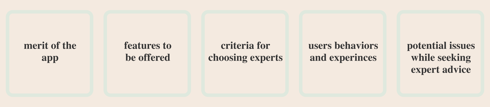

Maestro
Climb the ladder of career change with us

Project Overview

Overview
It gets challenging for people when they are in midst of changing careers to find an expert help to understand complex concepts. Providing an app that enables a way to chat or video call with an expert for people moving from non-technological fields to technology will help solve the problem to a great extent. The app will also provide a way to ask questions visible publicly to get answers quickly and easily.
Problem Statement
Most of the time, people face difficulties when they are in the process of career transition and may need advice from an industry professional.
Solution
Providing a platform that connects users with experts will help them get answers to their questions and discuss any concerns.
My Role
As a solo designer, I was responsible for the entire design process which included the competitive analysis, user interviews, surveys, personas, flows, low, mid and high-fidelity wireframes, usability and A/B testing, style guide, prototyping and more.
Tools
Adobe Xd, Usability Hub, Draw.io, Optimal Workshop, Survey Monkey, Marvel, Figma.
Duration
September 2022- January 2023
Design Process
Competitve Analysis
At the very beginning of the project I spent some time researching other applications offering similar services directly or indirectly to understand what is already available in the market, I downloaded, tested and prepared a competitive analysis for two of them Intro and Skillshare. After I completed SWOT Analysis for both the apps. I had a pretty good idea on certain shortcomings I should avoid and a sense of what unique features my app could offer.
SWOT Analysis
Strengths
- Offers a variety of session lengths
- Access to one-on-one video calls with celebrity experts
- Simple, sleek and intuitive UX/UI design.
- Ability to save and view sessions.
Weakness
- Very expensive for some sessions can cost upto $1000 for 15 minutes.
- Limited amount of topic areas.
- Booking sessions can be difficult especially with experts in high demand.
Opportunities
- Create a less expensive platform.
- Create a community for users to keep them engaged and active use app.
Threats
- Site such as masterclass has a greater amount of well known/famous industry experts at a much more affordabe prices.
- Sites such as skillshare has a community element where users can interact with each other, and occassionally even experts participate for sharing ideas and knowledge
Strengths
- Provides industry experts with a large following as instructors/content creators
- Provides access to video classes that users can access at their convenience.
- Engaging and intuitive UX/UI design.
- Users can share their completed course projects with others and receive feedback.
Weakness
- Does guarantee direct communication with experts.
- No dedicated sessions.
- Only allows to view the first lesson of each course for free trial.
- No search/filter option on search or homepage
Opportunities
- In addition to experts creating video content, one-to-one lessons with industry experts could attract more users.
- Create more options for discussion boards, small groups and direct messaging with experts.
- To be able to customize the homepage and search page to filter content
Threats
- Sites like coursera offers free full length courses from industry experts.
- Sites such as linkedin learning and coursera offers professional certificates on successful completion of courses.
- Masterclass provides a lot more famous industry experts.
Interviews and Surveys
To gain clarity on the needs of potential users, I decided it was time to talk to them. I created a survey to collect both quantitative and conducted interviews to dig a deeper and get more qualitative data.
My main research goals were as shown below
The user interviews were extremely beneficial and provided good idea of what users unmet needs were. The highlights of user interviews were as show below:
Maya (26), Product Designer based in London
Ben (34), Web Developer based in San Fransisco
Jimmy (44), Web Developer based in San Fransisco
Affinity Mapping

After I was done with the interviews I spent some time creating affinity maps. This process helped me to sort through the information to synthesize and organize my findings by patterns and themes.
My key findings:
- Users feel overwhelmed with the number of experts available and find it difficult to find those who they can trust
- Users tend to rely heavily on reviews or endorsement of a person they know and trust
- The design of the application should be intuitive and easy to use by not overloading the user with too much data.
- It was difficult for most of the users to define what an “expert” is. Before speaking to a professional about a career change, potential users stated that they wanted to see a persons “body of work”, but more importantly they wanted to feel more of a personal/human connection with the individual.
- Some users stated that they want to be able to see the work portfolios, blogs, posts and interest in order to connect better with the experts.
User Personas
Avinash Sharma
Make time for things you have to do as well as things you want to do
Goals and Needs
- A way to connect with others who are on a similar journey.
- Advice from someone who has been in his situation
- Looks for an app with a trustworthy review system to feel confident an knows what to expect when choosing an expert
- Wants a way to narrow down the search results to find a perfect match as fast as possible
Everyday Activities
- Goes to college thrice a week
- Part time internship after college
Frustrations
- Two main concerns are confidence in an expert finding a trustworthy expert with the right experience and price
- Overloaded website with too much information and bad user interface.
Motivation
- Feels supported while dealing with an expert
- Don't want to waste time by doing research, as at times it feel quite overwhelming with the amount of results
Tech
- Desktop
- Mobile
- Social Media
- Tech know-how
Quote
“It would be less scary knowing that someone is in the same boat as you.”